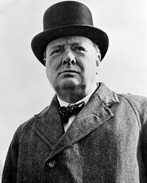

 Vinstonas Čerčilis gimė nedideliame Anglijos miestelyje netoli Vudstoko. Jo tėvas – žymus politikas lordas Rendolfas Čerčilis buvo Marlboro kunigaikščio Džono Spenserio Čerčilio sūnus. Motina – amerikiečių milijonieriaus Leonardo Džeromo dukra. V. Čerčilis mokėsi uždarose mokyklose, taip pat ir Harrow mokykloje, kur mokėsi gana prastai, dažnai buvo baudžiamas už prastus rezultatus ir per mažas pastangas. Dėl nepriklausomo ir maištingo charakterio, kai kuriuos kursus kartojo keliskart, akademiniais pasiekimais nepasižymėjo, tačiau buvo mokyklos fechtavimosi čempionas.